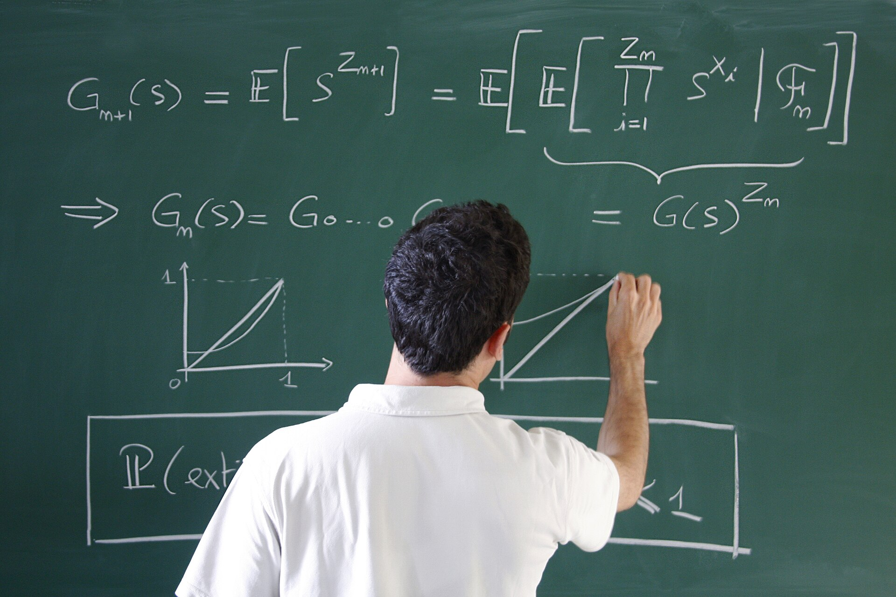

DICAS DE ESTUDO
Como estudar matemática
Entenda os conceitos, organize os cálculos e pratique problemas variados para desenvolver o raciocínio.
Introdução
Matemática se aprende construindo relações entre ideias e praticando como aplicá-las. Decorar fórmulas pode ajudar em alguns momentos, mas é importante saber o que cada símbolo representa, quais condições tornam uma regra válida e como conferir se a resposta faz sentido. Errar faz parte da prática: analisar o caminho revela o que revisar.
1. Um roteiro para resolver exercícios
Leia o enunciado até entender o que se pergunta. Anote os dados, identifique o assunto e represente a situação com uma conta, tabela, desenho ou gráfico. Escolha uma estratégia, faça os passos com cuidado e verifique o resultado por substituição, estimativa ou operação inversa.
Exemplo resolvido: “Uma mochila custa R$ 80 e recebeu desconto de 15%. Qual é o preço final?” Primeiro, calcule 15% de 80: 0,15 × 80 = 12. Depois subtraia o desconto: 80 − 12 = 68. O preço final é R$ 68. Confira: 10% de 80 é 8 e 5% é 4; o desconto total de 12 corresponde mesmo a 15%.

2. Fórmulas, funções, equações e limites
Ao estudar uma fórmula, identifique o significado e a unidade de cada variável. Faça um exemplo com números simples e explique por que a operação funciona. Para uma função, observe como cada valor de entrada se relaciona com a saída; tabelas e gráficos ajudam a enxergar esse padrão.
Uma função do primeiro grau pode ser escrita como f(x) = ax + b, com a ≠ 0. Na função f(x) = 2x + 3, se x = 4, então f(4) = 2 × 4 + 3 = 11. O número 2 indica a taxa de variação e o 3 é o valor inicial quando x = 0. Uma função do segundo grau tem a forma f(x) = ax² + bx + c, com a ≠ 0; seu gráfico é uma parábola. Substituir valores e comparar pontos com um gráfico ajuda a verificar o entendimento.
Equação passo a passo: para resolver 2x + 5 = 13, subtraia 5 dos dois lados: 2x = 8. Divida os dois lados por 2: x = 4. Confira substituindo na igualdade inicial: 2 × 4 + 5 = 13.
Limite: a expressão lim(x → 1) f(x) = 2 indica que os valores de f(x) se aproximam de 2 quando x se aproxima de 1. Por exemplo, para f(x) = (x² − 1) ÷ (x − 1), com x ≠ 1, fatorar o numerador dá f(x) = x + 1; portanto, quando x se aproxima de 1, os valores se aproximam de 2. Um limite descreve a aproximação e não exige que a função esteja definida naquele ponto.
3. Geometria: desenhe, nomeie e confira unidades
Faça um esboço da figura e marque medidas, ângulos e o que precisa descobrir. Um desenho não precisa estar em escala, mas deve mostrar as relações importantes. Separe área, perímetro e volume: são grandezas diferentes e usam unidades diferentes.
Exemplo: um retângulo de base 8 cm e altura 3 cm tem área A = b × h = 8 × 3 = 24 cm² e perímetro P = 2(b + h) = 2(8 + 3) = 22 cm. A área usa unidades quadradas; o perímetro, unidades lineares. Essa distinção ajuda a identificar respostas inadequadas.

4. Progressões aritméticas e geométricas
Na PA, a diferença entre termos consecutivos é constante. Na sequência 4, 7, 10, 13, a razão aditiva é 3; para encontrar o próximo termo, soma-se 3. O termo geral pode ser escrito como aₙ = a₁ + (n − 1)r. Para o 6º termo, a₆ = 4 + (6 − 1) × 3 = 19.
Na PG, cada termo é obtido multiplicando o anterior por uma razão constante. Em 2, 6, 18, 54, a razão é 3. O termo geral é aₙ = a₁ × qⁿ⁻¹; assim, o 5º termo é 2 × 3⁴ = 162. Confira a diferença entre somar uma quantidade fixa (PA) e multiplicar por um fator fixo (PG).
5. Pratique sem decorar procedimentos às cegas
Resolva uma questão com o exemplo aberto, depois tente outra parecida sem consultar e explique por que escolheu cada operação. Misture exercícios de tipos diferentes para treinar a identificação do método. Se errar, marque se a causa foi leitura, conceito, sinal, operação ou unidade; refaça a questão e escreva uma conferência possível.
Erros comuns
- Começar a calcular sem identificar o que a questão pede.
- Copiar uma fórmula sem saber quando se aplica.
- Ignorar parênteses, sinais ou unidades.
- Fazer sempre exercícios do mesmo modelo e não reconhecer variações.
- Apagar o erro sem descobrir em qual passo o raciocínio mudou.
Resumo
Leia, represente, escolha uma estratégia, calcule com organização e confira. Use fórmulas com significado, desenhos em geometria e padrões para comparar PA e PG. Prática variada e análise dos erros desenvolvem raciocínio com mais segurança.
Conclusão
Escolha um exercício que parece difícil, divida-o em passos e explique cada decisão. Se não avançar, identifique exatamente onde surgiu a dúvida e peça ajuda. Cada problema resolvido — e cada erro bem analisado — amplia seu repertório matemático.